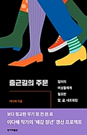

47
기업체에서 글쓰기 관련 강의를 진행하면 언급하는게 '잘 칭찬하기'의 기술인데, 글쓰기가 거창한 게 아니고 다른 사람을 기분좋게 만들고 싶을 때 확실히 기분 좋게 만들고 엿 먹이고 싶을 때 헷갈리지 않게 확실히 불쾌하게 만드는 기술이어서다.
48
'내가 의도한 대로 상대가 전달받는다'가 글쓰기에서 가장 중요한 명료함이라는 말이다. "제 의도와 다르게"라는 말은 변명이 될 뿐이다.
51
요는, 어떤 단어를 사용할 때 어떤 뉘앙스를 전달할 가능성이 높은지는 아무리 훈련해도 지나치지 않다. 글을 퇴고하는 과정에서 주의해야 하는 것이기도 하다. 상대의 잘못을 지적할 때는, 일로 지적해도 사적으로 받아들일 가능성이 높기 때문에 더더욱 주의해서 표현을 골라야 한다. 어휘력을 키운다는 것은 이런 뜻이다. 진심이 담겨야 진정성이 담보되는 것이 아니다. 내가 자주 사용하는 단어가 있다면 유사어, 대체 가능한 표현들을 찾고 표현의 긍정적 뉘앙스, 부정적 뉘앙스와 함께 숙고해보라. 이것은 타인의 말 속 속임수를 간파할 때도 도움이 되곤 한다.
69
설령 좋지 않은 일이 있다고 해서 시시콜콜 떠들지 않는다는 것이 스몰토크의 암묵적 합의라는 점을 기억하자. 중요한 정보를 주고받기 위한 대화가 아니니까.
이런 말을 하면 그러면 무슨 말을 하라는 거냐고 따지는데, 차라리 식상한 날씨 얘기가 안전하다. 한국의 기후변화는 늘 다이내믹하니까. 더워죽거나 추워죽거나 습해서 죽거나.
70
어렵다. 당연히 그렇다. 애초에 한국에는 스몰토크라는 문화가 따로 없이, 그저 사생활 침해와 오지랖 넘치는 참견이 모두를 불쾌하게 만들곤 한다.
------
스몰토크를 굉장히 힘들고 불편해 하는 사람이었는데 나이먹을수록 필요하다는걸 깨달음.
나도 스몰토크 잘하고 싶다 ;ㅂ;